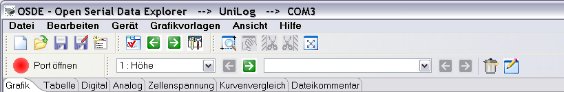
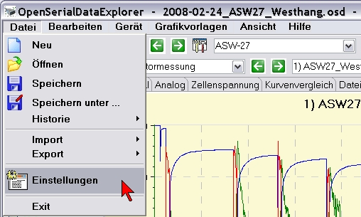
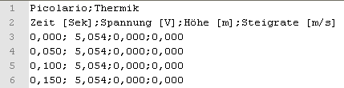
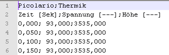
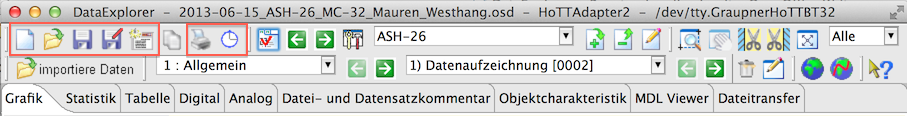

Menü- und Tool- Bar
Die Menübar stellt alle notwendigen Standardelemente zur
Verfügung, um die Anwendung zu steuern. Die ToolBar stellt mit
Piktogrammen versehene Steuerelemente bereit, die am häufigsten
verwendet werden.

"Datei" Menü
Von dem Datei-Menü aus werden alle Aktionen ausgeführt,
die einen Datei als Grundlage haben

- "Neu"
initialisiert die Anwendung für das eingestellte Gerät, sind
ungesicherte Daten vorhanden wir vor der neuen Initialisierung
nachgefragt
- "Öffnen" öffnet einen Dateiauswahldialog
um eine Datei, die geladen werden soll auszuwählen, wird dabei das
Gerät gewechselt und sind nicht gesicherte Daten vorhanden wird
nachgefragt
- "Speichern" sichert die aktuellen Daten mit dem
Bearbeitungsstand, ist noch kein Dateiname vergeben wird nachgefragt,
bzw. ein Dateisicherungsdialog geöffnet
- "Speichern unter.." öffnet ein
Dateisicherungsdialog, um die aktuellen Daten unter einem neuen Namen
zu sichern
- "Historie" zeigt eine Liste der zehn zuletzt
geöffneten Dateien, eine Selektion für zum Laden der Datei
- "Import" bietet die Möglichkeit "Comma
Separated Values" (CSV) Dateien in bearbeiteter Form oder mit
Rohdaten zu laden
- "Export" bietet die Möglichkeit "Comma
Separated Values" (CSV) Dateien in bearbeiteter Form oder mit
Rohdaten zu sichern

- "Einstellungen" öffnet den Einstellungsdialog,
um anwendungsweite Einstellungen vorzunehmen
- "Exit" beendet die Anwendung
Hinweis : Unter bearbeiteter Form ist die Datenform
gemeint, die der Tabellenansicht entspricht. In der Rohdatenform sind
die unveränderten Daten, exakt so, wie sie aus dem Gerät
ausgelesen wurden, enthalten. Liest man eine Datei mit Rohdaten ein,
werden sie entsprechend den in der Gerätedatei angegeben Werten
weiterverarbeitet und abhängige Daten werden neu berechnet.
Abhängige Daten sind als Beispiel die Leistung berechnet aus
Spannung und Strom.
Die Funktionen aus dem dateiorientierten Bereich sind auch
über die Toolbar erreichbar.

<<== zurück
weiter ==>>